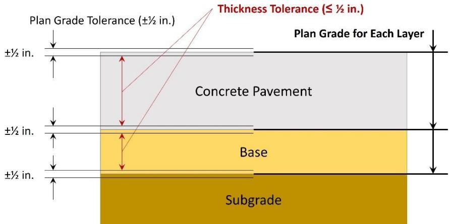

Pavement Payment Adjustment Calculation
The Pavement Payment Adjustment Calculation is the mandated method for evaluating concrete airfield pavements—runways, taxiways and repairs—by measuring material strength, slab thickness, plan‑grade elevation and surface smoothness in both longitudinal and transverse directions, together with edge slump and joint deformation as pass/fail criteria [1]. These measured attributes are compared to defined lower‑tolerance limits (e.g., 0.93 × specified strength, thickness no more than ½ in below the planned value, grade within ±½ in) and entered into the percent‑within‑limits (PWL) tables; a lot must achieve at least a 90 % PWL before any pay‑factor is applied, and the lowest resulting factor among strength, thickness, plan‑grade and smoothness determines the contractor’s unit‑price adjustment [1]. The calculation therefore links concrete quality directly to payment by enforcing statistical acceptance criteria and mandatory corrective actions—such as grinding or removal and replacement—when any attribute falls outside its tolerance, ensuring consistent performance across standard runway and taxiway projects [1].
Purpose and quality objectives
The Pavement Payment Adjustment Calculation evaluates concrete airfield pavement by measuring its material strength, slab thickness, plan‑grade alignment (elevation), and surface smoothness in both longitudinal and transverse directions, and it also checks edge slump and joint deformation as pass/fail criteria. These key performance attributes are the basis for applying pay‑factor adjustments that control contractor compensation. [1]
[1] — Ch. 3 (pp. 132–137), App. I (pp. 515–531)
The Pavement Payment Adjustment Calculation is used to enforce the concrete airfield quality requirement that thickness, plan‑grade elevation, and surface smoothness all meet defined lower‑tolerance limits; any parameter falling outside those limits triggers a reduction in contractor payment. The UFGS specifications tie pay adjustments directly to these three characteristics—smoothness, plan grade, and thickness—and apply the lowest computed percent payment (or highest deduction percentage) for any one characteristic to determine the lot’s final payment. [1]
The following figure illustrates the constraints associated with base and pavement surface elevation tolerances that underpin these payment adjustments.

Constraints associated with base and pavement surface elevation tolerances. [1]The figure illustrates the vertical stacking of concrete pavement, base, and subgrade layers to demonstrate how individual plan grade tolerances accumulate across different strata. It visually depicts that while each layer may meet its own specific elevation limits, the compounding of these plus tolerances can result in a finished pavement thickness that falls outside the required tolerance range.
[1] — Ch. 3 (pp. 132–137), App. I (pp. 515–531)
Scope and applicability
The reviewer notes that the Pavement Payment Adjustment Calculation is applied to airport concrete pavements—including new or reconstructed runways and taxiways as well as repair work—by evaluating each defined lot or sub‑lot of concrete. It applies to the construction processes of slab placement, plan grading, and surface finishing that control slab thickness, plan grade, and transverse and longitudinal smoothness. Accordingly, for projects smaller than 2 000 cubic yards the PWL approach is omitted and payment follows the standard criteria in §501‑8.1, while larger runway/taxiway projects exceeding 500 ft also require profilograph smoothness testing. [1]
[1] — Ch. 3 (pp. 132–137), App. I (pp. 517–531)
Pavement Payment Adjustment Calculation is mandatory for standard runway or taxiway projects when a lot meets the lower tolerance limits for all acceptance criteria; the lot must first achieve at least a 90 % PWL score before any pay‑factor can be applied. Once the lot passes the required smoothness, plan‑grade and thickness tests (including any grinding or replacement that may have been performed), the individual percent factors derived from the applicable tables are calculated and the lowest of those percentages is applied to the unit price. The calculation is not optional – if a lot fails any specification requirement it is either paid at a reduced rate or, when the failure involves straightedge tolerances, the pavement must be removed and replaced rather than receiving a payment reduction. Straight‑edge exceedances therefore trigger removal rather than an adjustment. The process is inappropriate in areas where smoothness testing is excluded, such as over grade breaks, drainage structures, other pavement penetrations, or on paving lanes shorter than 200 ft; in those locations no pay‑factor is computed and the standard acceptance/rejection rules apply. [1]
[1] — Ch. 3 (pp. 132–137), App. I (pp. 517–531)
Test methods and procedures
To compute a pavement payment adjustment the contractor must perform a defined series of field and laboratory tests on each lot or sublot. First, the paved area is divided into sublots as required by the contract; a random sampling location is selected in each sublot and a test specimen (core or concrete coupon) is obtained. The specimens are tested for flexural strength and the cores for thickness according to the sampling and testing procedures described in the specification. Measurements of thickness, smoothness and grade are then recorded.
“Strength and thickness are evaluated for acceptance on a lot basis using PWL methods outlined in AC 150/5370-10H, Item C-110.” The lower specification limits are set at 93 % of the required concrete strength and at the plan thickness minus ½ in. For smoothness, both straightedge and profilograph devices are used; “Acceptance requirements for surface smoothness are described in Section 2.1.1, which provides a procedure for both straightedge and profilograph testing.” Straightedge results are converted to payment percentages using Table 3.8: “Straightedge Testing: the percentage payment factor for straightedge tests are computed using Table 3.8.” Profilograph measurements follow the calibrated procedures in the manual and are similarly linked to the appropriate table.
After each measurement the average (X) and sample standard deviation (Sₙ) of the n samples are calculated; the lower quality index is formed as “Q _ { L } = ( X - L ) / S _ { n }”. The Q‑values together with the number of samples are entered into Table 1 of Section C‑110 to obtain the PWL for each characteristic. Individual PWLs are then combined using the prescribed combination table, and any deductions for smoothness or grade deviations are subtracted to produce the final lot pay factor. [1]
[1] — Ch. 3 (pp. 132–137), App. I (pp. 518–531)
Valid pavement payment‑adjustment calculations depend on using properly calibrated profilograph equipment, having the readings taken by qualified personnel—such as operators who meet the FAA’s training and certification requirements or licensed surveyors for grade measurements—and following the specific measurement methods prescribed in AC 150/5370‑10H; while the source does not detail environmental controls, adherence to these calibration and operator standards is required for acceptance. [1]
[1] — Ch. 3 (pp. 132–134)
Sampling and testing frequency
The payment‑adjustment calculation first partitions the paved area into sublots that reflect changes in thickness, construction method or sequence. As the specification states, “Divide the lot into n sublots in accordance with the acceptance requirements of the specification.” Within each sublot a single sampling point is selected at random; the process is guided by the requirement to “Locate the random sampling position within the sublot in accordance with the requirements of the specification.” At that location the contractor obtains both material‑property and geometric measurements. For thickness control two cores are taken from every sublot, and if either core exceeds the allowable shortfall the sample size is increased: “For pavements 200 mm (8 in thick) or greater, if either of the two cores from a sublot show a thickness deficiency of 19 mm (0.75 in) or greater, two additional cores shall be drilled in the sublot and the average thickness of the four cores will be computed.” Flexural‑strength testing follows an identical sample size: “Flexural strength of four random specimens taken from Lot A (n=4 specimens).” Because one set of samples is collected per sublot, the overall testing frequency for a lot equals the number of sublots defined; each sublot therefore contributes a single thickness average and a single flexural‑strength result that are later used to compute averages, standard deviations, lower quality indices and ultimately the pay‑weight‑limit values. [1]
[1] — Ch. 3 (pp. 136–137), App. I (pp. 518–531)
To obtain a statistically‑representative data set for pavement payment‑adjustment calculations, the lot is first partitioned into sublots as required by the specification. Within each sublot a random sampling location is selected in accordance with the same requirements, and measurements are taken at those locations following the prescribed test procedures. The contractor initially extracts two concrete cores from each sublot; if either core exhibits a thickness deficiency that meets or exceeds the applicable limit, two additional cores are obtained and the average of all four cores is used to represent the sublot’s thickness. This approach—randomly locating samples within defined sublots and augmenting the sample size when deficiencies are detected—ensures that the measurements reflect the material, process, and overall condition of the completed work for payment‑adjustment purposes. [1]
[1] — Ch. 3 (pp. 134–137), App. I (pp. 518–531)
Acceptance criteria and tolerances
The work is acceptable only when each measured attribute meets its lower specification limit and the statistical PWL requirement of at least 90 %. The lower limits are defined as follows: strength must be no less than 0.93 times the specified compressive strength (“Strength (L) = 0.93 × strength specified in paragraph 501-3.3”), thickness may not fall below the planned lot thickness minus 0.50 in (“Thickness (L) = lot plan thickness in inches – 0.50 in.”), and surface grade must stay within ±½ in of the design line, with an optional lateral tolerance of 0.1 ft (“The grade of the finished surface of the completed pavement cannot vary from gradeline elevations and crosssections shown on the plans by more than ½ inch (12 mm) vertically, or 0.1 ft (30 mm) laterally as an optional requirement.”). Smoothness is controlled both transversely and longitudinally: transverse smoothness measured with a straightedge must achieve at least a 95 % pay factor (“Transverse smoothness by straightedge: 95% pay factor”), while longitudinal smoothness (profilograph) requires the average profile index not to exceed 15 inches per mile. For each attribute the sample mean (X) and standard deviation (Sn) are used to compute a Quality Index QL = (X‑L)/Sn; the resulting QL is entered in Table 1 of AC 150/5370‑10H to obtain a percent‑within‑limits (PWL). The PWL for the lot must be ≥90 % for full payment. After individual pay factors are calculated, the contract unit price is adjusted by the lowest factor; any single out‑of‑tolerance condition therefore caps the overall payment. [1]
The following figure illustrates contractor risk under this PWL acceptance approach using strength test results as an example.
 Illustration of the Contractor’s risk in FAA’s PWL acceptance approach using strength test results as an example. [1]
Illustration of the Contractor’s risk in FAA’s PWL acceptance approach using strength test results as an example. [1]
The figure displays a bell curve representing the variation in quality of material within a lot, centered at the Acceptable Quality Level (AQL). The area to the left of this limit is highlighted as a zone where there is a probability that samples will be taken, illustrating the risk of rejecting acceptable material due to statistical variation.
[1] — Ch. 3 (pp. 132–137), App. I (pp. 517–531)
The pavement payment adjustment process begins by checking every individual test result against its lower‑limit tolerance. If a measurement falls outside that limit, the corresponding pay factor is taken from the appropriate table. For strength and thickness the lot‑level statistics are then computed: the sample average (X) and standard deviation (Sn) are used to form the Lower Quality Index (QL = ( X - L ) / Sn). The QL value together with the number of measurements is entered in Table 1 to obtain a Percent Within Limits (PWL), which becomes the attribute’s pay factor. Separate pay factors are derived for strength, thickness and smoothness; when both strength and thickness exceed 100 % the higher factor is used, if only one exceeds 100 % the two factors are multiplied, and if neither exceeds 100 % the lower factor is taken. The final contract unit price is then reduced by the single lowest percent among all characteristic pay factors (the highest deduction). If lot‑average values such as profile index exceed defined limits (e.g., >15 inches/mile) or thickness deficiencies reach removal thresholds, the lot may be rejected or removed. [1]
[1] — Ch. 3 (pp. 132–137), App. I (pp. 517–531)
Quality control and process monitoring
During production and construction the pavement‑payment‑adjustment process must continuously monitor a defined set of quality characteristics that feed the individual pay factors. The required parameters are:
- Concrete strength, verified by flexural‑strength testing of four random specimens per lot; acceptance uses the lower limit Strength (L) = 0.93 × strength specified in paragraph 501‑3.3.
- Slab thickness, measured by coring each sublot and compared to the plan thickness reduced by the allowance; the specification states Thickness (L) = lot plan thickness in inches – 0.50 in.
- Surface smoothness in both directions: transverse smoothness is evaluated with straight‑edge tests (payment factor computed from Table 3.8) and longitudinal smoothness with profilograph measurements (payment factor from Table 3.9). The profile index must stay at or below the lower specification limit (e.g., ≤15 in./mile); excess triggers a reduction.
- Plan grade/elevation, surveyed against the design grade line; the grade of the finished surface … cannot vary … by more than ½ inch (12 mm) vertically, or 0.1 ft (30 mm) laterally as an optional requirement.
Additional pass/fail items such as edge slump and joint‑face deformation are also checked, and repair or diamond‑grinding percentages above the contract limits invoke a 5 % pay reduction. For each lot a separate pay factor is calculated for strength, thickness, plan grade and smoothness; the lowest of these factors is applied to the unit price, ensuring consistent quality across the project. [1]
[1] — Ch. 3 (pp. 132–137), App. I (pp. 517–531)
The review identified several measurable trends and deviations that automatically require corrective action, payment reduction, or supplemental testing under the Pavement Payment Adjustment Calculation. Any indication that the lot’s quality‑factor (PWL) for strength or thickness drops below the 90 % threshold, that grade measurements exceed the allowable half‑inch vertical (or optional 0.1 ft lateral) deviation on more than a quarter of a sublot, that repairs affect over twenty percent of the slabs, or that diamond grinding is needed on more than twenty‑five percent of a sublot signals non‑conformance and triggers payment reductions, process adjustments, or additional testing to verify quality. Likewise, when core thickness deficiencies exceed the allowable limits (19 mm/0.75 in for pavements ≥200 mm thick, 13 mm/0.50 in for thinner sections) extra cores must be taken; if the averaged four‑core measurement still exceeds those deficits the entire sublot is rejected and must be removed. Straightedge tolerances that are exceeded require immediate removal and replacement of the affected pavement. Smoothness deviations—such as a final profile index greater than fifteen inches per mile or extensive diamond grinding beyond the prescribed limits (e.g., >10 % of a sublot)—also invoke pay reductions and may demand further investigation. Any measured parameter—thickness, plan‑grade deviation, longitudinal or transverse smoothness, edge slump percentage, joint face deformation, or bump height—that exceeds the tolerances set in UFGS 32 13 14.13 is deemed a failure, mandating remedial actions (removal, replacement, or limited grinding). Finally, discrepancies between contractor QC test results and government check tests drive the acceptance method: differences under 2 % allow use of the contractor’s data; gaps of 2‑4 % require averaging both sets; and disparities of 4 % or more trigger a review of sampling procedures, additional duplicate testing, and reliance on the government’s values until agreement falls below four percent. All of these trends, deviations, and test results must be flagged promptly so that the contractor’s QC team can adjust the production process and conduct any required supplemental testing. [1]
[1] — Ch. 3 (pp. 132–137), App. I (pp. 517–531)
Nonconformance and corrective action
When inspection or testing shows that a lot’s strength, thickness, smoothness, plan grade, or other quality metric falls below the required lower specification limits, the contract mandates immediate corrective action. The default response is removal and replacement of the non‑conforming portion; only with FAA concurrence may the Owner and Contractor elect to retain the lot, in which case it is paid at a reduced rate and the project payment ceiling is adjusted. After any required grinding or repairs are performed, the pay factor for the lot is calculated using the FAA rules – taking the higher of strength or thickness values when both reach 100 %, multiplying them if only one reaches 100 %, or applying the lower value if neither does. Additional deductions are applied: a five‑percent reduction (capped at 95 %) when repairs affect more than about one‑fifth of the slabs in a sublot, and a similar five‑percent cut when diamond grinding exceeds roughly one‑quarter of the sublot. Thickness deficiencies trigger a core‑testing protocol; for pavements ≥8 in thick a deficiency of 0.75 in (or ≥0.50 in for <8 in) in either of two cores requires two extra cores, and if the average of four cores still exceeds the limit the entire sublot is removed. Any sublot that fails to meet required concrete strength must be removed and replaced at no cost to the Government. The lowest computed percent factor derived from smoothness, plan grade, and thickness (after corrective work) becomes the actual payment percentage for the lot. When inspection or testing reveals a parameter that falls outside its tolerance, the contractor must mobilize its quality‑control personnel—who must be adequately resourced and empowered—to intervene during production and correct the out‑of‑tolerance condition before work proceeds. [1]
[1] — Ch. 3 (pp. 132–137), App. I (pp. 517–531)
Work must be corrected whenever any measured parameter exceeds its tolerance limits. Correction is achieved by grinding (e.g., diamond grinding limited to ten percent of a sublot and a maximum depth of ¼ in.) or, when the exceedance meets removal‑and‑replacement thresholds—such as a straightedge test over 1/8 in. in an aircraft‑arresting zone or a core thickness deficiency of 0.75 in.—the pavement must be removed and replaced before any payment is made. After correction the lot is retested; if the contractor’s quality‑control (QC) results differ from the Government’s check tests by more than two percent, additional sampling is required, and when the discrepancy reaches four percent or greater a full review of sampling and testing procedures is triggered. Acceptance with adjustment occurs when all thickness, grade, smoothness and flexural‑strength values meet the specified lower tolerances after correction. In that case the appropriate pay factor is computed from the tables (straightedge, profilograph, plan‑grade, thickness) and applied; if production test results differ from Government results by 2–4 %, the average of the two sets is used and payment may be reduced based on the lowest factor. Further investigation is required when other quality indicators—such as edge‑slump or joint‑face deformation readings—are out of tolerance, prompting remedial actions and possibly more extensive testing before a final decision. Rejection is warranted if a lot ultimately fails the specification after corrective actions, if core visual inspections reveal unacceptable durability issues, or if test result differences remain four percent or higher despite additional Government testing; in those cases the pavement is removed and replaced at no cost to the Government. [1]
[1] — Ch. 3 (pp. 134–137), App. I (pp. 524–531)
Documentation and reporting
The Pavement Payment Adjustment Calculation file must retain a complete set of inspection records and test results that support acceptance of concrete strength, slab thickness, surface grade, and smoothness. For every lot the file shall include straightedge and profilograph smoothness measurements, edge‑slump and joint‑face deformation data, plan‑grade survey results, flexural‑strength evaluations, and core‑thickness records. The sampling plan must be documented – for example, two cores are removed from each sublot for a total of eight cores per lot – together with any additional cores taken when deficiencies exceed the allowable limits. All data sheets, field reports, and laboratory datasheets are entered into a central spreadsheet or database and compared against the lower specification limits (strength at 0.93 × specified value, thickness equal to planned thickness minus 0.50 in., etc.).
Measurements of grade must be stamped and signed by a licensed surveyor; any sublot where more than 25 % of the area fails grade or requires grinding triggers a corrective action that reduces the lot pay factor by five percent (capped at 95 %). Certification is required to show that contractor QC values are within the allowable variance limits compared with Government check‑test results. When production testing varies by less than 2.0 % of the Government’s test results, production test results will be used for acceptance; if the variance is between 2.0 % and 4.0 %, the average of the two sets is used; and if it exceeds 4.0 % additional duplicate‑sample testing and evaluation of sampling procedures are required.
Pay‑factor calculations are derived from the appropriate tables: straightedge tests use Table 3.8, profilograph tests use Table 3.9, plan‑grade adjustments use Table 3.10, and thickness adjustments use Table 3.11. The file must also record any corrective actions such as diamond grinding (limited to 10 % of a sublot and a quarter‑inch depth), removal and replacement of deficient pavement, or additional testing performed to resolve variances. The lowest percentage derived from these characteristics is applied to the unit price and measured quantity to determine the final payment adjustment. [1]
[1] — Ch. 3 (pp. 132–137), App. I (pp. 521–531)
Quality records for pavement payment adjustment are first compiled into a central spreadsheet or database that pulls the contractor’s production test data—strength, thickness, smoothness (straight‑edge and profilograph), and plan‑grade surveys—from datasheets and field reports. “Tools to support acceptance can be developed in a manner that incorporates test results from datasheets and field reports into a central spreadsheet or database, and then using equations to assist in evaluating the data for acceptance per the specifications described below.” The Government reviews these records by comparing the contractor’s numbers with its own check tests. When the variance is less than 2 % the contractor’s values are accepted; larger variances trigger averaging or additional sampling as required. “If production testing varies by less than 2.0% of the Government’s test results, production test results will be used for acceptance.” The Review and Acceptance (RPR) and Quality Assurance Representative (QAR) then verify that each lot meets the lower tolerance limits set in the UFGS tables, including checks such as transverse‑joint testing. “RPR and QAR must ensure that the transverse joint between lots is tested for SS.” After verification, the pay‑factor for each characteristic is calculated; the lowest percent payment across all characteristics is applied to the contract unit price. “The adjusted contract unit price shall be the product of the pay factor for the lot and the contract unit price, for each lot accepted.” These documented calculations provide an immediate basis for acceptance and payment adjustment and create a performance record that can be referenced in future projects for trend analysis, corrective action, and overall contractor quality evaluation. [1]
[1] — Ch. 3 (pp. 132–135), App. I (pp. 527–531)
Relationship to long-term performance
After concrete paving is completed, the contractor’s quality‑control results are compared to Government check tests. If the two sets of results differ by less than 2 %, the contractor data are accepted; a variance between 2 % and 4 % requires averaging both sets for acceptance, and any discrepancy of 4 % or more triggers a review of the sampling plan, duplicate‑sample testing by Government and QC personnel, and continued periodic check tests until the results agree within less than 4 %. In parallel, the as‑built pavement is re‑measured for smoothness using straightedge (Table 3.8) and profilograph surveys (Table 3.9). All corrective actions such as grinding or removal/replacement are performed before calculating each payment factor. The transverse joint between consecutive lots must be retested with a straightedge to verify surface smoothness, and plan‑grade elevations continue to be surveyed so the Government representative can assess compliance after any grinding. Core sampling is required to determine thickness payment factors: for pavements 200 mm (8 in) or greater, if either of the two cores from a sublot shows a thickness deficiency of 19 mm (0.75 in) or more (or 13 mm/0.50 in for thinner sections), two additional cores are taken and the average of four cores is evaluated; an average exceeding those limits mandates removal of the entire sublot. Although concrete strength does not affect payment, any sublot that fails to meet the required strength for final acceptance will be removed and replaced at no cost to the Government. All collected data must be submitted in accordance with UFGS 32‑13‑14.13. [1]
[1] — Ch. 3 (pp. 134–137), App. I (pp. 524–531)